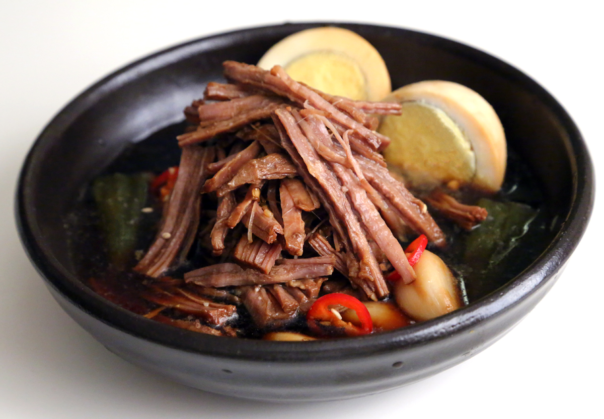

Jang Jorim Recipe

Ingredients
- 2lb hanger steak
- 6 cups water
- 1 cup soy sauce
- 2 green chile peppers
- 1/2 onion, quartered
- 2 green onions, trimmed and cut into thirds
- 6 cloves garlic
- 2 tablespoons white sugar
- 1 tablespoon light corn syrup
- 1 tablespoon rice wine
- 1/2 teaspoon Korean red chile pepper, to taste
- 4 hard-boiled eggs, peeled
Instructions
- Soak the steak in cold water in a large bowl for 30min to 1 hr to drain residual blood.
Change water as needed.
- Combine the water, soysauce, green chile peppers, onion, green onions, garlic, sugar,
corn syrup, rice wine, and red chile peppers in a large pot to make a broth.
- Bring to a boil and add steak. Reduce heat and simmer until steak is mostly tender,
about 45 minutes.
- Submerge eggs in the broth. Continue cooking for abour 15 more minutes.
- Remove steak from the broth, wait till it's cooled and cut into smaller strips.
- Transfer the steak and eggs to an airtight container.
- Discard the veggies in the broth and skim to remove oily reidue.
- Strain broth through paper towel lined mesh strainer into a bowl.
Repeat serveral times until all oily residue is removed.
- Pour broth over steak and eggs in the container. Cover and chill before serving, about 1 hr.
Back to Top
Homepage